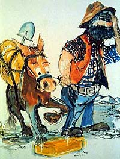
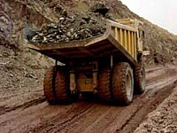
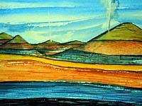
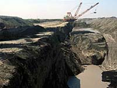

 The earth has provided man with the necessities for life since the beginning of recorded time. We have been using the minerals from the ground since the first stones were used as tools. Later, metals made their debut as useful materials for tools and other possessions such as adornments for the body. Today, the mining industry is dependent upon the occurrence of minerals in the earth's crust for economic reasons. In Saskatchewan, various minerals can be found which were formed millions of years ago. The location in the earth's crust where these minerals occur in great quantity and quality is referred to as an orebody. To pinpoint the location of an orebody and reveal its potential to the mining world requires the skills of geologists, prospectors, geophysicists, geochemists and mining engineers. An understanding of basic geology is important to anyone wishing to learn more about the mining industry.
|
Geology is the science of the earth; studying minerals and how they were formed is one branch of geology. Various physical and chemical processes on the earth were and are responsible for the formation orebodies. Various theories have been put forth over the years; many of these scientific theories have been modified, some have been 'thrown out' and still others have remained relatively unchanged. The theory of plate tectonics has helped to explain the formation of orebodies. This theory states that the earth's crust is made up of large plates. The plates meet and move over each other. This theory can explain the formation of mountains, earthquakes, volcanic activity and with these processes, the formation of minerals. | The earth is old; the geological time scale illustrates the eras of the earth. Scientists have been able to calculate the age of the planet by using a combination of techniques including the dating of meteorites made of the same material as that found in our earth. Scientists estimate the age to be around 4.5 billion years old. Knowing this, one can only imagine the length of time required to form the mountain ranges found on the earth today. Some ranges have been exposed to the forces of nature for a longer period of time and the effects of erosion are apparent. Some mountain ranges are relatively young. The forces involved in forming mountains are also responsible for the appearance of minerals in the ranges. Our earth is made up of various elements. The elements that are found on their own in nature are called native elements. These include the ones in greatest abundance (oxygen, silicon, aluminum, iron and calcium) and those found as pure metals (gold, silver and copper). Other elements have combined chemically with other elements forming compounds known as minerals. These solid minerals make up the structures called rocks. Various types of rocks exist on the earth and are classified by geologists according to the substances contained within and by the way the rock was formed. For example, igneous rocks are the result of volcanic activity, where molten rock from deep within the earth is released to the surface, where it is cooled. Gold is one mineral found in this type of orebody.
|
What makes a mineral valuable to mining industry? Minerals become of economic interest when they are found in concentration; of sufficient quantity and quality to make recovery economically feasible. So, the next question you might ask is where do the minerals come from and how do they occur? Rocks on the earth's surface are classified into three categories:
|
1. Igneous RockThe interior of the earth is heated due to the radioactive decay of various elements. Liquid rock, formed within the earth from the extreme heat, is known as magma. This rock, under pressure, pours out onto the earth's surface and is called lava. The rocks resulting from the solidification of the magma are referred to as igneous rock. The magma, having originated from deep within the earth, is composed of about eight elements including iron, magnesium, calcium, sodium and potassium. As the magma cools, crystals form within the rock, in concentrated form. Each mineral that forms, does so in sequence, according to the freezing temperature (point at which liquid solidifies) unique to that mineral. As the crystals form within the magma, they also react with the material, creating even more types of minerals. Some magmas released to the earth's surface contain valuable elements such as nickel, cooper, gold, silver and platinum and some magmas are released to the ocean floor are sources of base metals. Igneous rocks are the most abundant of rocks and are very common in the Precambrian (Canadian) Shield, which covers northern Saskatchewan and most of Canada. Classification of igneous rocks is based on the observable characteristics such as the rock's mineral content and texture as well as size, shape and arrangement of the crystals. An example of an igneous rock is granite, composed mainly of quartz, feldspar and mica.
|
2. Sedimentary Rock Sedimentary rocks are the result of the accumulation and consolidation of both the suspended and dissolved substances that are transported from land to sea. These rocks are the result of weathering and erosion on land rocks and are laid down under water. The pressure of materials above compress the eroded material into a solid mass. It is within these beds of compressed material that oil, gas and coal are found; coal is compressed organic material formed over millions of years and is classified as a metamorphic rock. Sedimentary rocks can be found almost anywhere on earth (which was once covered by seas); some sedimentary deposits are flat-layered and some, due to the constant movement of the earth's land masses, are vertical or even overturned. Saskatchewan was once covered by water, so it is not surprising that we can find large amounts of sedimentary rock. Examples of sedimentary rock include sandstone, clay, shale, limestone (calcium carbonate), gypsum (calcium sulphate), halite (sodium chloride) and sylvite.
|
3. Metamorphic Rock This type of rock is the result of extreme physical and chemical changes to sedimentary and igneous rock. Because of the extremes in forces required to produce metamorphic rock, the minerals within the original rock (either sedimentary or igneous) are transformed into new minerals. Shale, for example, is a sedimentary rock but becomes slate once subjected to extreme pressure. Other examples of metamorphic rocks include coal (shown above), marble and quartzite. |